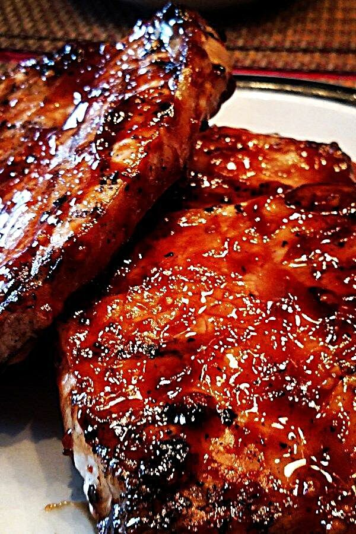

Honey Garlic Pork Chops

Sticky Finger Delight
Delicious porkchops with the right combination of sweet and savory
that's just right for those times that you just need something to
taste like summer. The kids will love the candy coating. just dont tell them its good for em!
Pair this dish with some lemonade and it will feel like July, no matter what time of year.
Ingredients
- 6 (4oz)(1in thick)pork chops
- 2 cloves garlic
- 2 2/3 tbsp honey
- 1/2 cup ketchup
- 2 tbsp low sodium, soy sauce
Directions
- Preheat grill to medium heat and lightly oil the grate
- Whisk ketchup, honey, soy sauce, and garlic together in a bowl to make a glaze
- Sear the pork chops on both sides on the preheated grill. Lightly brushing glaze onto
each side of the chops as they cook. Grill until no longer pink in the center, about 7
to 9 minutes per side. An istant-read thermometer inserted into the center should
read 145 degrees F(63 degrees C)